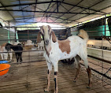

About:
SaSaNa Cattle Farms is located in Ramanagara district in Karnataka, India. We are located 60 kms from Bangalore, 28 kms from Tumkur and 15 kms from Kunigal Taluk.
SaSaNa Cattle Farms was founded in 2010 with a mission to be pioneers in identifying and developing best goat breed that is suitable for conditions prevalent in India. Through these years we have learned our lessons (sometimes the hard way!)
We are engaged in breeding and research on Local Bread Nati goats for a long time. Our mission is to produce high quality meat, fast growing, genetically superior Nati breeding stock and supply to the up and coming goat farms.
I have always had a passion for farming and I strongly believe that I can make a big difference in goat farming in India. I am currently running SaSaNa Cattle Farms in an innovative and very profitable manner. It has been a rewarding journey and we wish you a great success!!